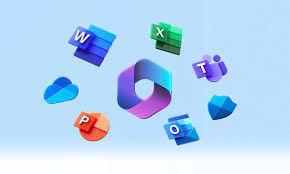

Portafoleo
backend developer
Mi nombre es Santiago Bohorquez soy estudiante de ingenieria informatica enfocado en el area del backend tegno 25 años y el proposito de esta pagina es dar una presentacion de mis proyectos y conocimientos
He tenido la oportunidad de realizar proyectos de programacion con objetivo educativo en donde para la realización de estos he utilizado lenguajes de programacion como Python, Java y JavaScript con multiples finalidades y en proyectos enfocados en el frotend, Backend, y el Analisis de Datos

Tengo experiencia utilizando bases de datos para administrar los proyectos que he realizado, he trabajado con lenguajes SQL y NOSQL, con MariaDB o MySQL como bases de datos relacionales, y MongoDB como base de datos no relacional
Dentro del ambito de las librerias que he podido usar se encuentra principalmente NumPy y Pandas,las cuales tiene como objetivo el analisis y la visualizacion de datos que usan la estructura de Python para su funcionamiento

Tengo conocimientos del funcionamiento de la nube y los servicios que aqui se despliegan utilizando como base AWS y manejando contenedores utilizando Docker para el correcto despliegue y funcionamiento de los proyectos en multiples versiones de los proyectos
Dentro de mi carrera estudiantil y profesional he realizado multiples proyectos utilizando las diferentes herramientas que tiene Office como lo es Excel, Word,Power Paint, Access los cuales han sido fundamentales a lo largo de multiples proyectos y trabajos
